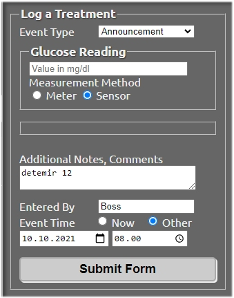

Long acting insulin agonists⌁
As there is no dedicated feature in Nightscout for declaring long-acting insulin injections, you will have to do it as an "Announcement" in Careportal.
Announcements⌁
When logging the injection in Careportal, select "Announcement" in the drop-down list. Again, check "Sensor", under Glucose Reading, so that the entry will be superimposed with the SGV curve.
The syntax for the entry is important, as CGMSIM is not very error-tolerant. The most important are the 3 first letters and a blank space before the dose (in numbers). The first letter can either be upper, or lower case
Mind the spelling and syntax !
In the "notes" field, please write down the selected insulin first, and then the number of units, separated by a single empty space:
Valid entries are for example:
- detemir 12
- Detemir 14 U
- levemir 10
- glargine 22
- Glargine 18 Units
- Lantus 17 u
- Toujeo 16 U
- touj 14
- degludec 15
- Tresiba 17 U
These entries are NOT valid :
- detemir12 (missing blank space)
- 12U glargine (indicate insulin first, then dose)
- Livemir 20U (spelling error in the first 3 letters)
- TRESIBA 18 u (all capital letters not allowed)
Example⌁

The announced injection will appear as an orange dot on the SGV curve:

After a while you'll want to look at your treatment results. Nightscout provides a very convenient and flexible tool for that.